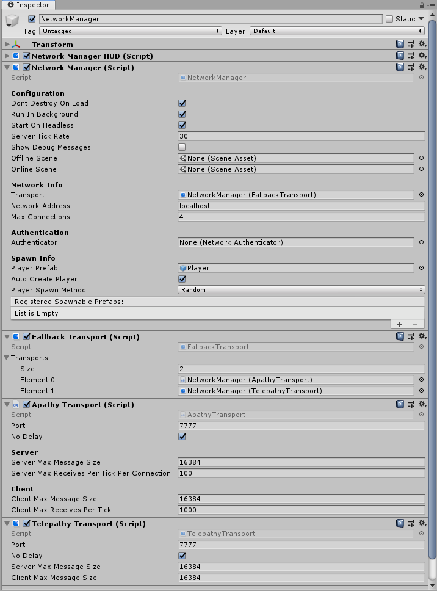

Fallback Transport
The FallbackTransport can be used to work around transport platform limits.
For example, our Apathy transport is currently only available on Windows, Mac and Linux where as Telepathy is available on all Platforms. Apathy has significant performance improvements, and ideally we would want Mirror to use Apathy if on Windows/Mac/Linux and fall back to Telepathy otherwise.
This is what the FallbackTransport allows us to do.
Usage:
- Add a gameobject with a NetworkManager to your scene if you have not done so
- By default, Unity will add TelepathyTransport to your NetworkManager game object
- Add a FallbackTransport component to the gameobject
- Assign the FallbackTransport component in your NetworkManager's transport
- Add a ApathyTransport component to the gameobject
- Add both ApathyTransport and TelepathyTransport to the FallbackTransport's transport property.
Important: all fallback transport need to be binary compatible with each other. For example, it might happen that the server runs Apathy and a client connects to it with Telepathy.
